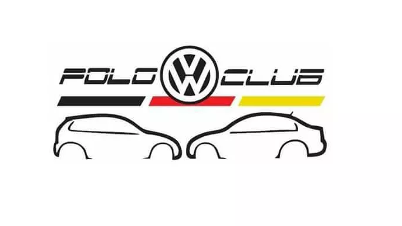
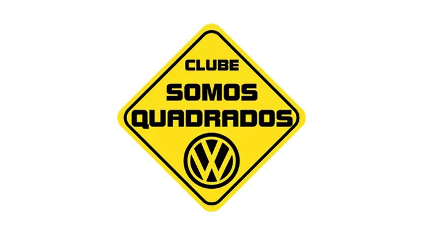

O Polo Mk6 Club nasceu 15 de agosto de 2017 como um simples grupo no Facebook, no qual interessados no carro que seria lançado apenas alguns meses depois, compartilhavam notícias sobre este lançamento da Volkswagen.
O clube tem membros por todo o Brasil, mas é em São Paulo onde estão a maioria e onde ocorrem a maior parte dos encontros, juntando proprietários do Polo e Virtus, onde é possível trocar conhecimento e fazer novas amizades automotivas.
Mundo dos GTIs
Idealizado em 2012, o intuito do Mundo dos GTIs é reunir os aficionados pelos esportivos produzidos pelo Grupo VW.
O diferencial do grupo é juntar, exclusivamente, os modelos GTI. Pode ser ele, o luxuoso e tecnológico Golf; a Parati, Station mais amada do país; o Gol, quebrando todos os recordes de venda; o Pointer, eleito o mais belo de seu tempo; o Polo, com seu carisma e agilidade ou, até mesmo, o recém lançado up!.
INP Garage
Grupo de apaixonados por veículos do grupo VAG, com maior foco no VW GOLF, tendo também participantes com outros veículos da marca. Temos uma sede própria onde se realizam encontros semanais todas quartas-feiras para integrantes do grupo confraternizar e fazer churrascos. Onde também montamos uma oficina para que possamos montar e fazer manutenções de nossos carros, restrita também a integrantes do club. Todo ano participamos de diversos eventos VW de originais e modificados.

Polo Club - SP
Nosso club foi fundado em 03/05/2017 em São Bernardo do Campo, com o intuito de ser o club mais organizado em atividade, reunindo o máximo de pessoas possível para trocar informações sobre o Polo em tendo em vista que os clubes existentes eram mais virtuais do que reais.
Não importa se o veículo é mais novo ou mais antigo, nossa intenção é reunir em um mesmo local todas as gerações do Polo, parcerias com outros clubes como já temos com o VW Polo Club da Itália que é a maior comunidade sobre o Polo no mundo com mais de 300 mil seguidores.

Clube Somos Quadrados
Tudo começou com cinco jovens que residiam na região do ABC Paulista e tinham em comum a paixão pelos carros da linha BX sentiam falta de encontros de carros em sua região, então decidiram organiza-los.
Entre os anos de 2006 e 2007 foram muitos encontros, participação em arrancadas, eventos de carros rebaixados, som automotivo e de antigos. No final do ano de 2007 o clube passou por uma renovação. O encontro voltou a ser mensal e em um novo local: A Fundação Santo André. Entre 2007 e 2011 os encontros foram realizados mensalmente e em 2012 o Clube ganhou um novo local, o Ginásio Poliesportivo em São Bernardo do Campo. No final do ano de 2014 uma nova parceria foi firmada com o Automóvel Clube do Grande ABC e a Secretaria da Cultura de São Caetano do Sul e a partir deste ano de 2015 temos em todo primeiro domingo do mês o Evento Quadrados no Bosque.
Gol G3 Fahrer Club
O Gol G3 Fahrer Club foi fundado em 2010, com o intuito de reunir proprietários e admiradores da terceira geração do Volkswagen Gol, e realizar um intercâmbio de informações entre seus membros, sanando dúvidas dos proprietários, eventuais problemas técnicos, detalhes de peças e manutenção.
Com membros de todo o Brasil, se tornou uma das maiores comunidades dedicadas ao Gol Geração 3.